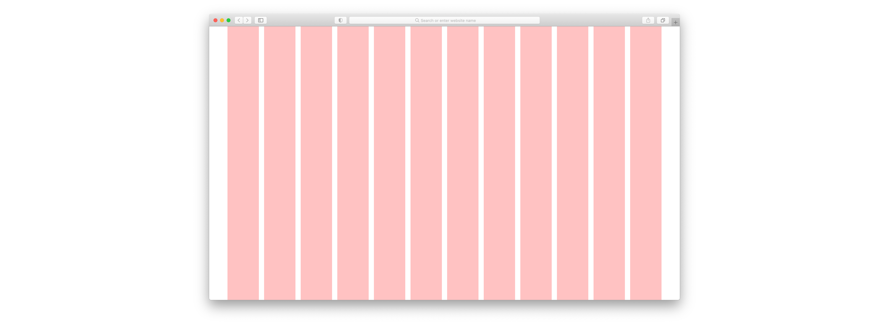
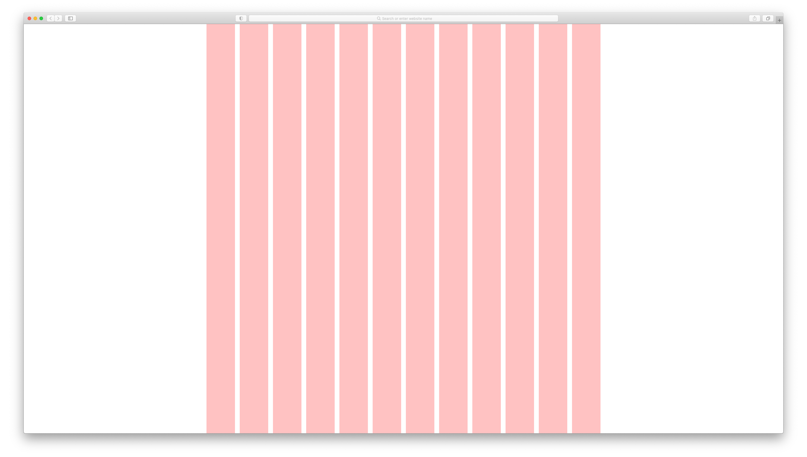
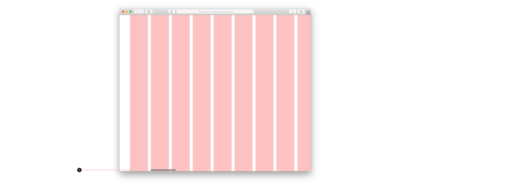
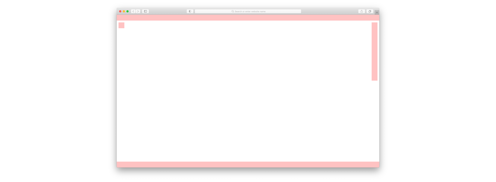
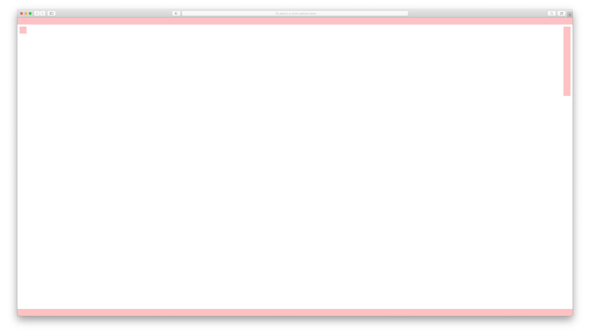
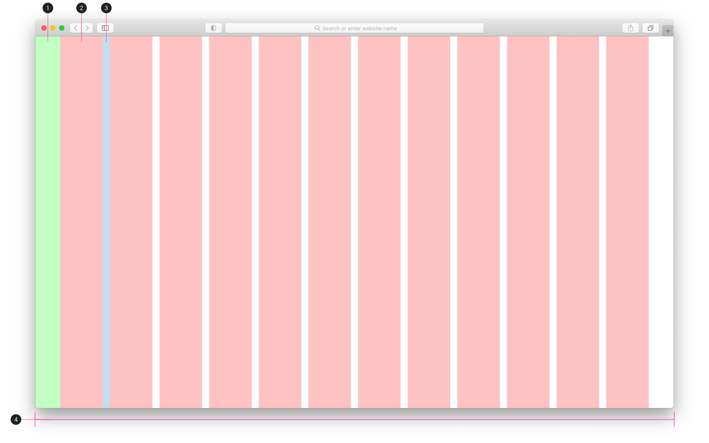
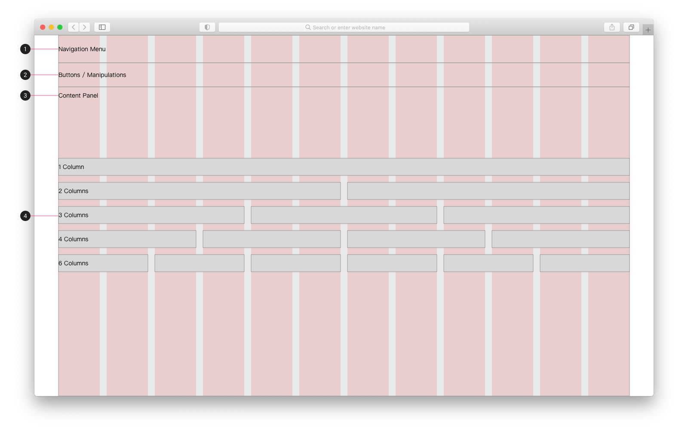

整体说明 General
布局类型
仿真产品使用 2 类布局。

- 任务型产品，使用
12 栅格的布局。包括：前端框架：UI Framework仿真平台：NI Simulation - Simulation Tasks仿真平台：NI Simulation - Simulation Statics
- 工具型产品，使用
0 栅格的布局。包括：仿真平台：NI Simulation - Simulation Analyzer内部工具：Scenario Cloning - Scenario Visualizer（暂缓）
响应式布局
- NavInfo Simulation 正式版（第一版），不使用响应式布局。
- 只做桌面版网页的默认布局。
- 暂时不做移动端的布局。
- UI Framework，预研响应式布局。
- 研发优先做 12 栅格。
- 产品设计做移动端布局设计。
12 栅格
默认 (W = 1440)

大屏 (W > 1440)

移动端 (W < 1440)


- 横向滚动条
0 栅格 (内容向四边对齐)
默认 (W = 1440)

大屏 (W > 1440)

移动端 (W < 1440)
横向滚动条
界面宽度说明
12 栅格

- margin width = 56
- column width = 96
- gutter width = 16
- default
- page width = 1440
- columns = 12
0 栅格

- 顶部、底部固定。
- 与顶部、底部、侧边的距离/间距固定。
界面内容说明
前端框架 (UI Framework)
内容块

- Logo & Navigation Menu & Search
- 位置/效果：固定
- W = 1328
- H = 80
- Navigation
- 位置/效果：单独纵向滚动条
- W = 208
- H = 40
- Align = left, middle
- Padding = 0
- Content Panel
- 位置/效果：页面纵向滚动条
- W = 912
- Padding = 16 (左右都)
- Table of Content
- 位置/效果：单独纵向滚动条
- W = 208
- H = 40
- Align = left, middle
- Padding = 0
- Padding (Content Panel)
- 内容面板，左右 padding = 16
文字
根据 UI Framework 的 Typography。
大小

- 产品名称 = Heading 5
- 搜索框内文字 = Body 2 （颜色有变化）
- 产品版本 = Comments
- 语言切换 = Body 1
- 间距 = 24
- 导航栏标题 = Subtitle 2
- 导航栏子标题 = Caption
- 内容页标题 = 导航栏标题/子标题 = Heading 4
- 内容标题 = 目录标题 = Heading 5
- 内容子标题 = 目录子标题 = Heading 6
- 内容子子标题 = 目录子子标题 = Subtitle 1
- 内容文字 = Body
- 目录标题 = “Table of Conetent” = Subtitle 2
- 目录 = Caption
- 子目录和上级目录左侧间距 = 16
间距

颜色
根据 UI Framework 的 Color。

- 鼠标点击当前页面 = Navigation 选中 = Primary Color = #004F9D
- 鼠标悬停于文字 = 文字高亮 = Primary Color = #004F9D
- 页面向上滚动 = Table of Content 内容置灰 = Secondary Color = #CECECE
- 页面当前 = Table of Content 高亮 = Primary Color = #004F9D
- 页面未到达 = Table of Content 常规颜色 = #000000
- 顶部导航栏阴影效果
- box-shadow - 底部阴影
- 阴影值：x = y = 0；blur = 1
仿真平台 (NI Simulation)
仿真任务/统计数据
内容块

- Navigation Menu
- W = 1328
- H = 64
- Buttons / Manipulations
- W = 1328
- H = 56
- Content Panel
- 栅格
- 1 列 = 1328
- 2 列 = 656
- 3 列 = 432
- 4 列 = 320
- 6 列 = 208
- 12 列 = 96
文字
根据 UI Framework 的 Typography。
场景/仿真可视化
内容块
文字
根据 UI Framework 的 Typography。